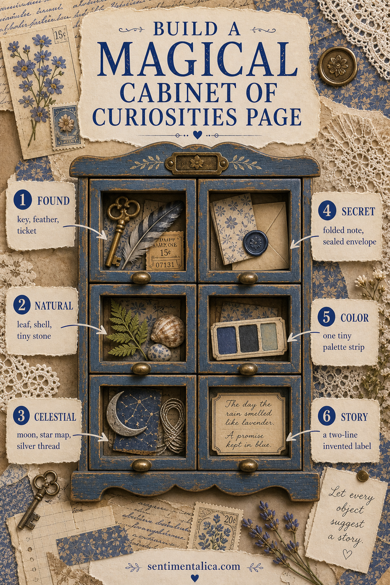
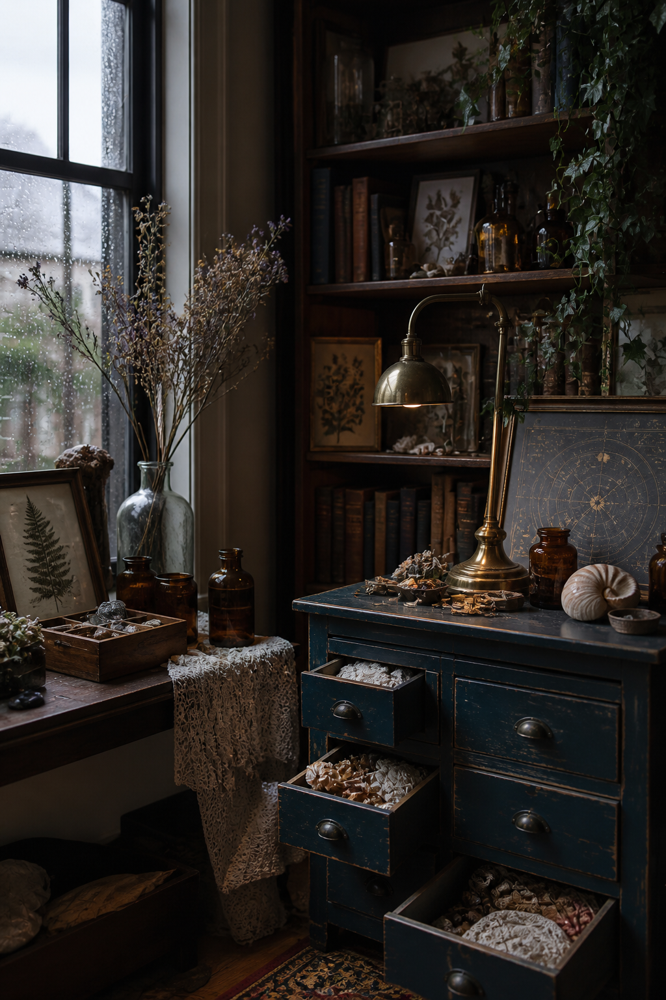

A cabinet of curiosities page is a home for things that feel connected before you know why. A key, shell, ticket, pressed leaf, tiny moon, and folded note can become a collection when each object is given a place and one small piece of story.

Draw the cabinet first
Divide the page into six uneven compartments. They can resemble drawers, specimen boxes, shelves, or old library-card pockets. Keep the lines imperfect. A cabinet built from torn strips and ink feels more inviting than a precise printed grid.
Drawer one: something found
Begin with an ordinary object gathered from daily life: a small key, feather, ticket, button, or label. Write where it was found. A plain location such as “under the blue chair” immediately gives the object a world beyond the page.
Drawer two: something natural
Add a leaf, shell, seed head, pebble rubbing, or copy of a pressed flower. Use a paper envelope if the real object is bulky or fragile. Record one sensory detail—the rough edge, cool surface, pale stripe, or scent after rain.

Drawer three: something celestial
A moon cut from vellum, a hand-drawn constellation, silver thread, or a scrap of star map lifts the page out of ordinary time. Keep this compartment dark enough for the pale elements to glow. One celestial clue is usually stronger than a whole sky of stickers.
Drawer four: something secret
Fold a note small enough that it must be opened deliberately. Write a hope, question, private memory, or sentence you are not ready to place in the open. Seal it with ribbon, a paper tab, or a tiny wax-look circle made from cardstock.
Drawer five: a color specimen
Make a strip of three or four painted scraps borrowed from the collection. Midnight blue, faded botanical green, parchment, and antique brass are a useful starting point. Repeating these colors around the page turns unrelated objects into one visual family.
Drawer six: the invented label
Give the collection a line that sounds as though it came from an old catalogue: Objects kept from the summer when the clocks ran slowly, or Small evidence of a house beside the moon garden. The label does not need to deceive anyone. It is a doorway into imaginative writing.
Let one drawer stay nearly empty
Collections need a pause. Leave one compartment with only thread, a shadow, or a pencilled number. The quiet drawer makes the detailed ones easier to explore and leaves room for something you may find later.
Build depth without adding bulk
If the journal must close flat, suggest dimensional drawers with shadow rather than heavy objects. Ink one edge of each compartment, place a slightly darker paper beneath it, and attach envelopes with narrow paper hinges. Scan or photograph shells, keys, and stones instead of gluing the originals. A translucent cover over one specimen adds depth while keeping the page practical.
Use numbering to create a larger archive
Give every object a small catalogue number and repeat that number in a note at the page edge. On a later spread, you can refer back to “object 03” without repeating the whole story. This makes separate journal entries feel like rooms in the same imagined collection.
Your cabinet can grow across several pages. Repeat the same drawer shapes, numbering, or blue paint so new objects feel part of the same mysterious archive.
Browse more story-led journal projects from Sentimentalica.